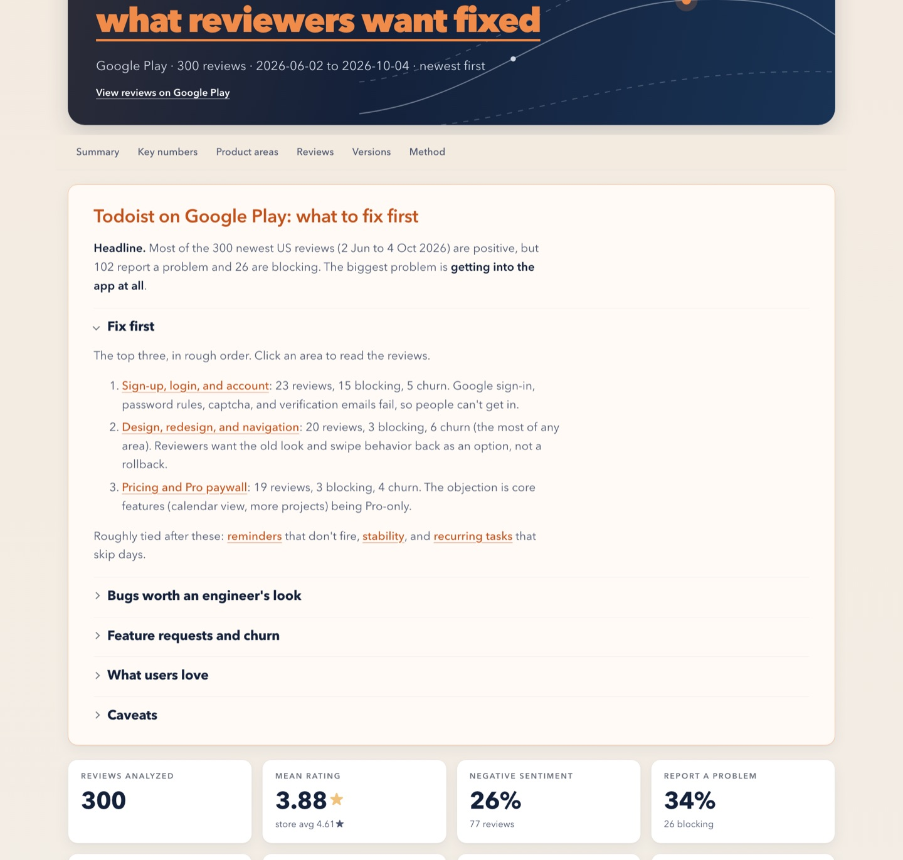

Check a release after it ships
See which complaints reviewers tie to an update, and whether complaints about an area went up.
Ask for reviews "since September 1".app-review-triage reads the reviews on an App Store, Google Play, or Steam page (300 by default, up to 10,000), sorts the complaints into your product's own areas, and ranks them with verbatim quotes as evidence, so your team has a starting point to review.
+ 12 more areas in the report. Each review counts more when it's severe, mentions leaving, or follows an update, so 9 Stability reviews (6 blocking) edge out 11 about due dates.
Real quotes and counts from the sample run: 300 Google Play reviews of Todoist, 2 Jun to 4 Oct 2026. Jev labels each review; code does the counting and ranking. Severity tags: minor is an annoyance, degraded means something works poorly, blocking means it doesn't work at all or the reviewer lost data or money. How the numbers are made
Reading a few hundred reviews by hand can take most of a day and often ends in a list of anecdotes. This skill labels every review it fetches, counts problems by product area, and shows which ranks hold up when the sample is resampled and which could easily swap.
From the sample run. 15 reviewers said they'd leave or already had.
A finished run produces one self-contained report.html. Claude opens it in your browser and gives you a link to it.

The top of the Todoist sample report. Open the full report ↗
The sample report uses public Google Play reviews of Todoist, shown without reviewer names. To have a review removed, open an issue.
A short summary that names the top three areas, each linked to the reviews behind it.
Issue counts, blocking problems, churn and praise per area, plus a likely-rank range from resampling, so you can see which ranks are stable and which could swap.
Each quote is a sentence picked from the review itself, shortened with … when it's long. Quotes are never paraphrased.
Bug reports with repro detail, feature requests, people saying they'll leave, and problems that started with an update.
An area is marked "fewer" or "more lately" only when a statistical test suggests the change is unlikely to be chance alone. Versions are listed newest first.
report.htmlThe report, with a CSV view and downloadreview_labels.csvOne row per review, every label and probabilitybrief.mdThe numbers behind the report, in plain textSee which complaints reviewers tie to an update, and whether complaints about an area went up.
Ask for reviews "since September 1".Areas named the way your team names them, and verbatim quotes to check and use in a readout.
Name your features, or give Claude one research question to shape the areas around.Run it on a rival's page to see what their reviewers complain about and what they praise.
Any public App Store, Google Play, or Steam link.Steam's thumbs up and down are reported as % recommended, next to the game's all-time share, and a run handles up to 10,000 reviews.
In our test, fetching 10,000 Steam reviews took about a minute.Load a CSV or JSON export from a CRM, Play Console, or App Store Connect.
Their text goes to TypeSafe. Check you're allowed first.Praise is counted per area too, so the team can see which features reviewers praise.
Todoist sample: design and ease of use, 24 praise reviews.Python scripts fetch the reviews, count, rank, and render the report. Star ratings, dates, and versions aren't sent to Jev; they're joined back in code.
TypeSafe's Jev model reads each review once and answers about 45 narrow questions in parallel (the count grows with the number of product areas):
Claude drafts product areas for your app ("Free-tier limits", "Editor and typing"), checks the results, and writes the summary from the computed numbers and quotes.
Quotes are picked from the reviews, never written by a model. Claude writes the summary from the computed numbers, so check it against the tables. Near 50/50 labels are left out of the counts and listed for a person to check.
The rules behind every count and rank, so you can explain them in a readout. Every Jev question, threshold, and weight is in one file, jev_questions.py, where you can check or change them.
You need Claude Code and a TypeSafe API key (TypeSafe bills per use; see how many reviews for estimates). You don't write code. Setup is four steps: paste each command into a terminal (on a Mac, the Terminal app) and press Return.
git clone https://github.com/Ying8109/app-review-triage.git ~/.claude/skills/app-review-triage
If your Mac asks to install developer tools, say yes; that installs git. For one project only, clone into that project's .claude/skills/app-review-triage instead.
uv runs the scripts and installs their Python dependencies on first use.
curl -LsSf https://astral.sh/uv/install.sh | sh
Or brew install uv. On Windows, or without uv, see the README's install steps.
Create a key at console.typesafe.ai/keys, then add this line to ~/.zshrc or ~/.bashrc:
export TYPESAFE_API_KEY="your-key-here"Replace your-key-here with your key. On Windows, run setx TYPESAFE_API_KEY "your-key-here" instead. Never paste the key into a chat or commit it to a repository.
Open a new terminal so it sees the key, and start Claude Code. In the Claude desktop app, start a new session. The skill is picked up automatically.
Ask in your own words, or type /app-review-triage.
Whether your key is set (never the key itself), which product and link, what to categorize, and how many reviews. For categories, Claude can draft product areas from the reviews, use the areas your team tracks, or shape them around one research question. It repeats your answers back before fetching anything.
After fetching, Claude shows the reviews' date range, the product areas Jev will be asked about, what text goes to TypeSafe and Anthropic, and the estimated time and cost. Nothing goes to Jev until you say "run it".
Claude opens report.html in your browser and recaps what you asked for against what was analyzed. Want different areas? Ask: a rerun asks Jev only about the areas you changed.
An example run, shortened:
TYPESAFE_API_KEY? Please don't paste the key here.Estimates from our test runs with jev-1.13.0 and about 18 product areas. Your time and cost will vary with review length, the number of product areas, and TypeSafe's current pricing. Model time only; Claude's own steps add a few minutes.
| Reviews | Model time | Jev cost | Report size |
|---|---|---|---|
| 300 (default) | ~6 s | ~$0.10 | ~0.5 MB |
| 1,000 | ~20 s | ~$0.30 | ~1.2 MB |
| 5,000 | ~1.5 min | ~$1.50 | ~5 MB |
| 10,000 (maximum) | ~3 min | ~$3 | ~10 MB |
Each review's title and text, plus the app's name, go to TypeSafe's API for labeling; star ratings, dates, and versions aren't sent to it. Claude also reads a sample of reviews and a summary of the results while it works, so that text goes to Anthropic as part of your Claude Code session.
The TypeSafe SDK reads it from your environment. No script prints it or writes it to a file, and the skill tells Claude never to ask for the key itself.
It contains every analyzed review in full, and a reviewer may have included an email address or order number. Private exports such as support tickets are sent to TypeSafe and appear in the report too.
Free and open source under the MIT license.